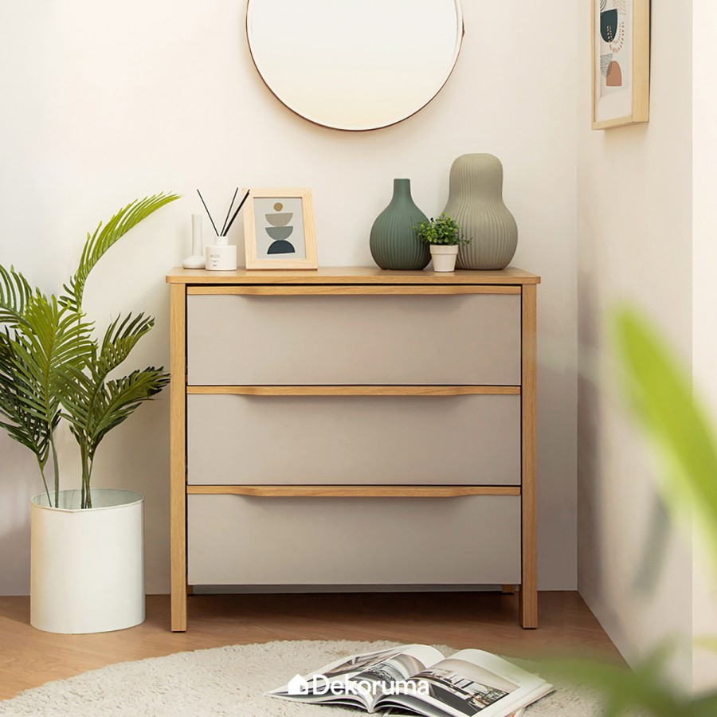
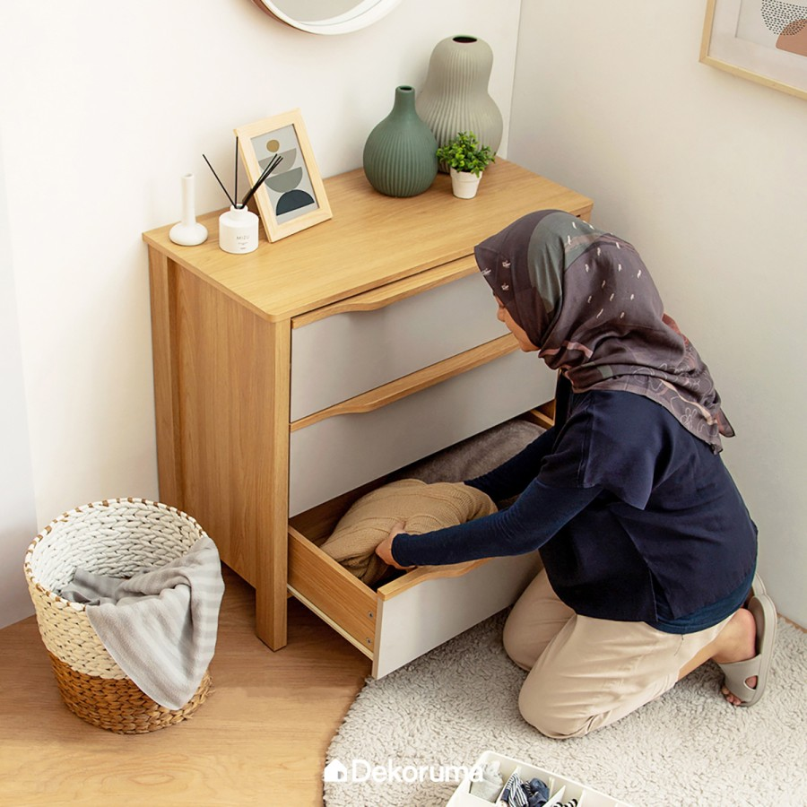
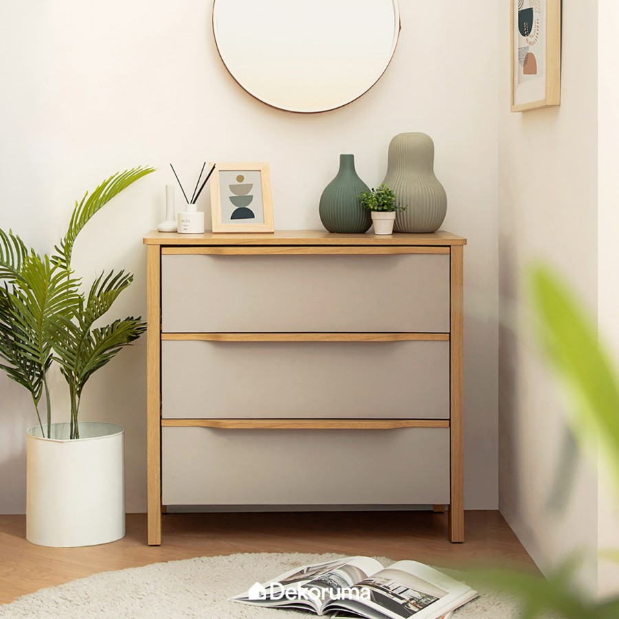
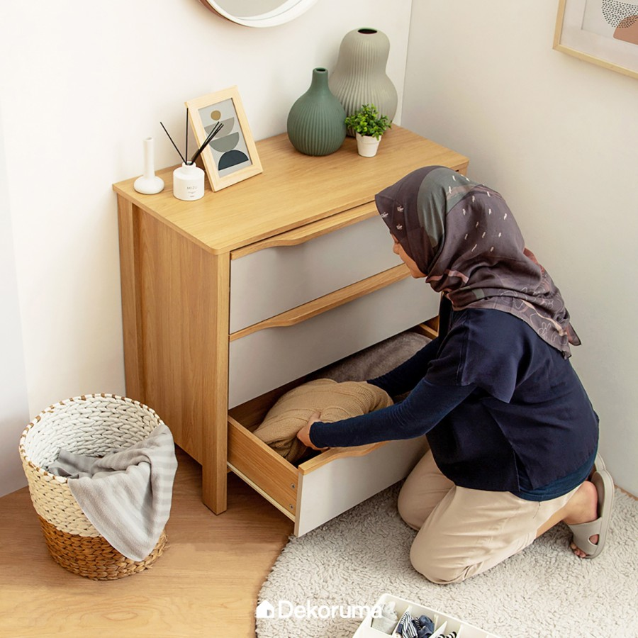
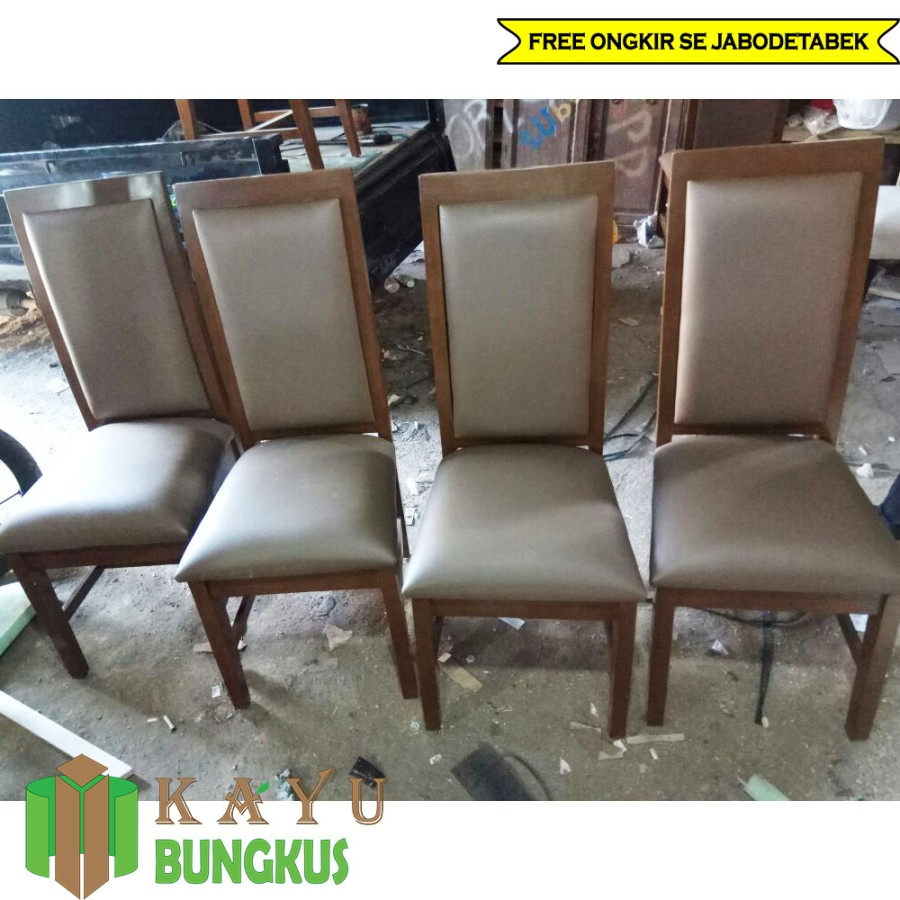
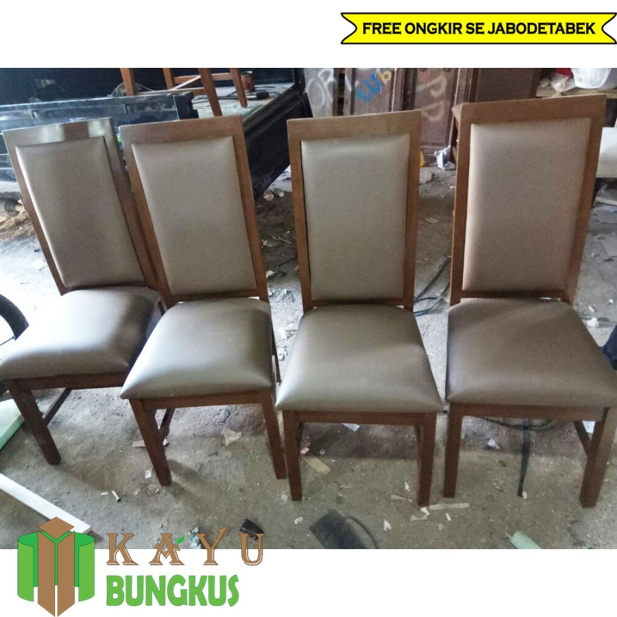

TokoPaedi.


Terinspirasi dari era kejayaan Beverly Hills, setiap potongan dalam koleksi ini membawa nuansa kemewahan yang abadi. Didesain dengan detail yang elegan, koleksi ini menghadirkan keseimbangan sempurna antara tradisi dan modernitas.
Height (H) - Width (W)
Catatan: Diukur secara manual dengan toleransi ukuran sebesar ± 2 cm
Article Details:
Shirt
Short
Sleeve
Regular Fit
Logo Stiching
Machine Wash
Sebagai Pengingat:
Kami hanya mengirimkan produk dengan ukuran dan jumlah sesuai pesanan pelanggan. Demi menjaga eksklusivitas dan kualitas, setiap pembelian bersifat final—tidak dapat dikembalikan, ditukar, atau direfund.
Kami menghargai perhatian terhadap detail sebelum melakukan pembelian. Jika terdapat
kendala, harap sertakan video unboxing saat pertama kali menerima produk agar kami dapat
meninjau permintaan Anda dengan baik.
Terima kasih atas kepercayaan Anda dalam memilih koleksi kami.


Terinspirasi dari era kejayaan Beverly Hills, setiap potongan dalam koleksi ini membawa nuansa kemewahan yang abadi. Didesain dengan detail yang elegan, koleksi ini menghadirkan keseimbangan sempurna antara tradisi dan modernitas.
Height (H) - Width (W)
Catatan: Diukur secara manual dengan toleransi ukuran sebesar ± 2 cm
Article Details:
• Shirt
• Short
• Sleeve
• Regular Fit
• Logo Stiching
• Machine Wash
Sebagai Pengingat:
Kami hanya mengirimkan produk dengan ukuran dan jumlah sesuai pesanan pelanggan. Demi menjaga eksklusivitas dan kualitas, setiap pembelian bersifat final—tidak dapat dikembalikan, ditukar, atau direfund.
Kami menghargai perhatian terhadap detail sebelum melakukan pembelian. Jika terdapat
kendala, harap sertakan video unboxing saat pertama kali menerima produk agar kami dapat
meninjau permintaan Anda dengan baik.
Terima kasih atas kepercayaan Anda dalam memilih koleksi kami.

Hadir dengan sistem operasi VIDAA U4.2, 32-E31KP menghadirkan teknologi yang nyaman, mudah, cepat, aman, dan terjangkau. Nikmati pula pengalaman menonton super menyenangkan dengan REGZA Engine HG dan Digital Noise Reduction.
Picture Technology:
• REGZA Engine HG
• Display Technology
• HD Ready
• Essential PQ Technology
• Digital Noise Reduction
• Color Re-master
• Picture Optimizer
• Contrast Booster
• Football Mode
• Panel Type: VA - Soft Panel
• Refresh Rate: 60Hz
Sound Technology:
• REGZA Power Audio
• Dolby Audio
• DTS HD
• Main Speakers: 8 watt x 2
Note:
Rekam video unboxing saat barang telah sampai dan centang bagian asuransi untuk klaim asuransi saat mengalami kerusakan


Kulkas 1 pintu dengan desain metal door elegan di pintunya dengan sedikit aksen printing bunga. Kapasitas 150 liter. Dilengkapi freezer jumbo dan rak tempered glass yang dapat diatur.
Fitur:
• Kulkas 1 Pintu
• Kapasitas 150 Liter
• Metal Door
• Jumbo Freezer
• Tempered Glass Rack
• Perfect Door Sealed
• Direct Cooling
 



Nikmati GRATIS ONGKIR untuk pengiriman ke area JABODETABEK! Apabila kamu berada di luar Jabodetabek, silahkan chat admin untuk biaya kirim ke kotamu!
Dekoruma MITSU Lemari Laci Minimalis 3 Pintu | Kabinet Kayu
• Brand: Heim Studio
• Warna: Cokelat
• Material utama: MDF
• Ukuran produk: 80.3cm x 40cm x 75.5cm
• Ukuran kemasan: 89.5cm x 44.5cm x 18cm
• Berat produk: 41.5kg
Catatan:
• Stok update sesuai etalase
• Produk dikirim flatpack, bisa pesan perakitan
• Garansi 14 hari (WAJIB video unboxing)
• Info lebih lanjut: dkr.ma/garansi-retail

 
Set meja makan berbahan kayu lengkap dengan 6 kursi. Dudukan diberi jok dan sandaran busa.
Dimensi Kursi:
• Tinggi: 110 cm
• Lebar dudukan: 45 cm
• Panjang: 50 cm
Dimensi Meja: 160 x 90 x 80 cm
Spesifikasi Produk:
• Bahan: Kayu pinus
• Jok: Busa rebonded + busa super
• Finishing: Cat melamin
• Kain & warna bisa custom
• • Kaca meja 5mm